Kokedama Moss Ball Plant | Table Top Style
Kokedama is a moss-covered ball that transforms the simplest of houseplants into living art. Put aside traditional pots, giving an unbelievable presentation guaranteed to be a conversation piece that is full of life and intrigue. To break it down for for those who are completely new to this type of plant styling, you simply take a rooted plant, build a ball of mud around it and cover the mud ball with moss, making the ball a living planter. The art of making Kokedama moss balls is closely tied to the Japanese art of bonsai, Kusamono, and Nearai styles. With Christmas is just around the corner, these would make amazing gifts to give to your plant-loving friends and family.
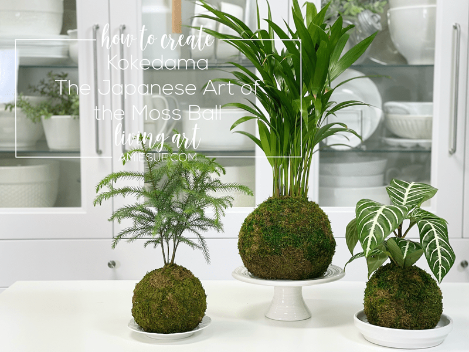
I want to start off by sharing that this style of plant decor is going to require a little patience as you create your first one. But once you have made one, it will be much easier on the second, third, and fourth tries. And trust me, you will end up making more than one. I have tried a few different ways to make these Kokedama balls and settled on the method that I will be sharing below. Ready to bring a little living art into your home? Let me teach you how!
Kokedama allows gardeners to turn plants into living sculptures.
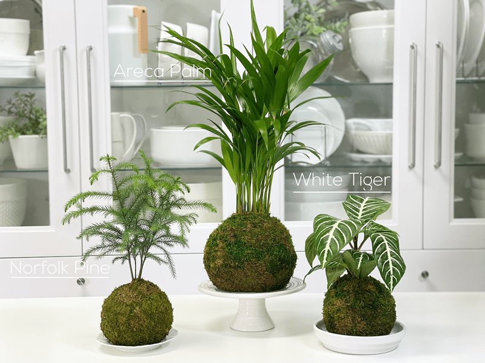
Type of Plants That Work Well
There are a lot of houseplants that will work for Kokedama balls. The balls can be displayed sitting on the countertop or they can be hung, which would be perfect for vining plants. If this is your first time creating a Kokedama ball, use a smaller 4″ plant before you go any bigger. The ball will be made to the approximate size plant pot, and starting off with a small plant will be a little easier to deal with before you dive into a larger plant. So here are just some of the plants that seem to do well…
 Anthurium
Anthurium- Cebu Blue Pothos
- Chinese Money Plant
- Croton
- Dracaena
- Dwarf ZZ Plant
- Ferns
- Ficus Tree Bonsai
- Hoya
- Ivy Peperomia
- Norfolk Island Pine
- Peace Lily
- Philodendron
- Pothos
- Rabbit Foot Fern
- Super Dwarf Red Vine
- Spider Plant
- Tiger Cub Bromeliad
How Long Will the Plant Survive?
This style of “potting” is not a forever home for the plant. They usually last 2 to 3 years; however, the period can be shorter or longer, depending on the plant you use for your DIY Kokedama project. When the roots of plants are coming out of moss ball, it is a sign to remake the moss ball larger or replant it in a pot.
Items Needed to Make a Kokedama Ball
I will into more depth on some of the items needed and also provide links to the items I used.
Soil Mix
The soil mix recipe for Kokedama can vary slightly but typically will include the following “ingredients.” Once you have the soil measured out in a bowl, add enough water that is necessary until the soil holds its shape when pressed into a ball. If you accidentally use too much water, you can a bit more houseplant soil, but we will also be draining excess water with a strainer. The amount you mix up will depend on the size of the plant you are using.
- Indoor houseplant soil – 2 parts basic soil
- Peat moss or coconut coir – 1 part – helps to hold/retain water.
- Bonsai soil or orchid bark – 1 part – helps with aeration. Since the plant will be living in a constricted environment, it is necessary to have good aeration in your soil.
Loose Sphagnum Moss (optional)
Often, people will wrap the plant roots in wet sphagnum moss, securing it with a string, to help retain moisture. I have done this a few times as well as a few times without and both ways worked just fine. This is a different type of moss than what you will be using for the outside of the moss ball. This (click here) is my all-time favorite type of moss to use in this type of application. It comes compacted in a brick shape. You snap off a small section and place it in a bowl of water to reconstitute it. There isn’t a photo of this step down below, since I skipped doing it for this plant.
Sphagnum Sheet Moss
Fresh, living moss is the best bet but not always easy to find. Both the fresh and dried can be ordered online. Before you do, try to shop local; check out local flower shops, nurseries, etc. When working with this moss, I found it much easier to manage by placing the sheet moss on a baking pan and soaking it with water until moist and pliable. Allow to drain for a few minutes before using.
Fresh Living Moss
- Fresh moss provides excellent insulation for the plant’s roots and can hold up to 20 times its weight in water.
- It can also come with insects and bugs, especially if bringing it in from the outdoors, so don’t be alarmed.
- It’s best to look for larger sheets so you don’t have to piece a lot together.
Dried (Faux) Moss
- Dried moss works but is a bit more fragile to work with. I like to rehydrate mine to make it easier to form it around the soil ball.
- Dried moss won’t retain the water like fresh moss, so you will need to stay on top of watering.
- Dried moss can have dyes added to it, which can leach onto the surface on which the ball is sitting. Also, when creating the ball, protect the surface you are working with so the dye doesn’t stain the counter.
Cheesecloth
Using cheesecloth is optional, but I do recommend it. I have made the moss balls both ways, and the cheesecloth route is the way to go, especially if you are making a larger ball. If you have small hands like me, it can be hard to cup the soil ball while working with the moss wrapping.
- Use unbleached cheesecloth to avoid adding chemicals to the roots of the plant.
- Cut the cheesecloth to hang roughly 4″ over the edges of the bowl.
String to Tie Around the Moss Ball
- String is used to secure the outer sheet moss to the soil ball. This prevents the ball from falling apart and helps to shape the ball into its desired shape.
- I have read that people will use floss, fishing line, twine, cotton rope, etc. I used polyester sewing thread that was green in color. I prefer that the string disappears and doesn’t draw attention to the living art piece.
Forming the Soil Ball
- After you have made your special soil mix (suggestions listed above) add enough water to your mix so that you can make a firm ball that doesn’t crumble.
- If you add too much water, don’t worry; you can either add a touch more soil mix to the bowl, or you can hand squeeze some of it out. When we are all done making the ball, we will be setting it in a strainer so any excess water can escape.
Ready to make a Kokedama moss ball creation?
-
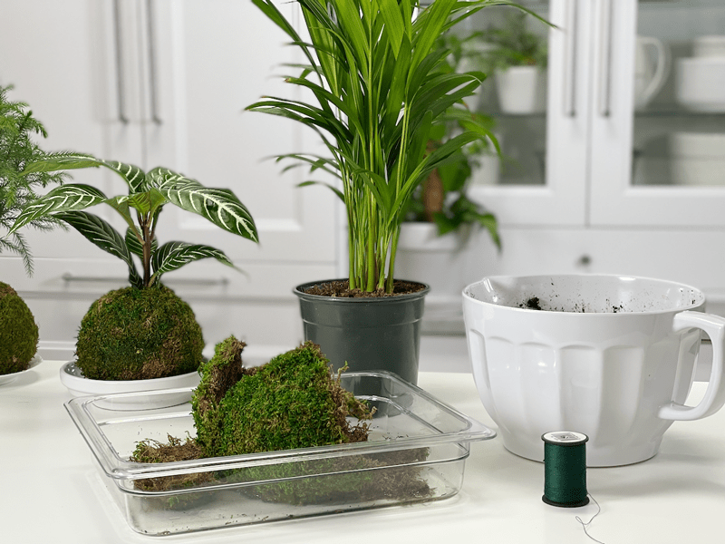
-
Gather all your supplies; get the sheet moss soaking and mix the soil.
-
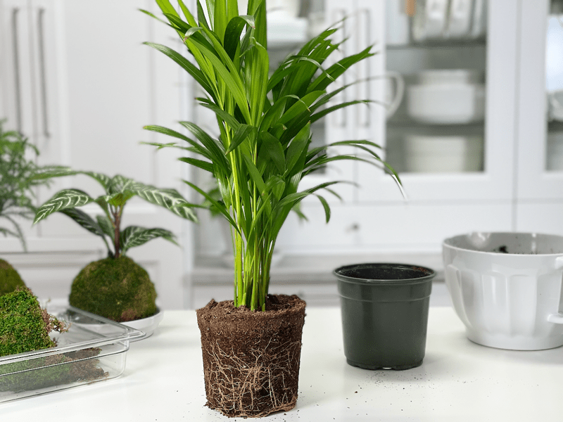
-
Remove the plant from the pot.
-
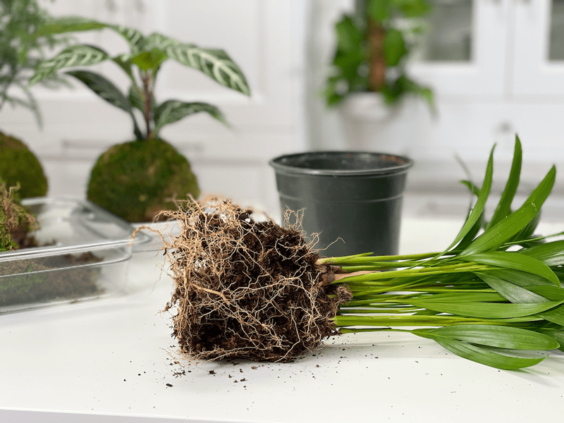
-
Gently remove as much soil as you can from the roots without harming them.
-
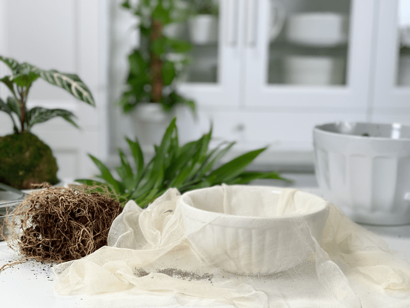
-
Select a round-bottomed bowl that is roughly the size of the pot (in diameter) that the plant came in. Leave plenty of excess cheesecloth on all 4 sides.
-
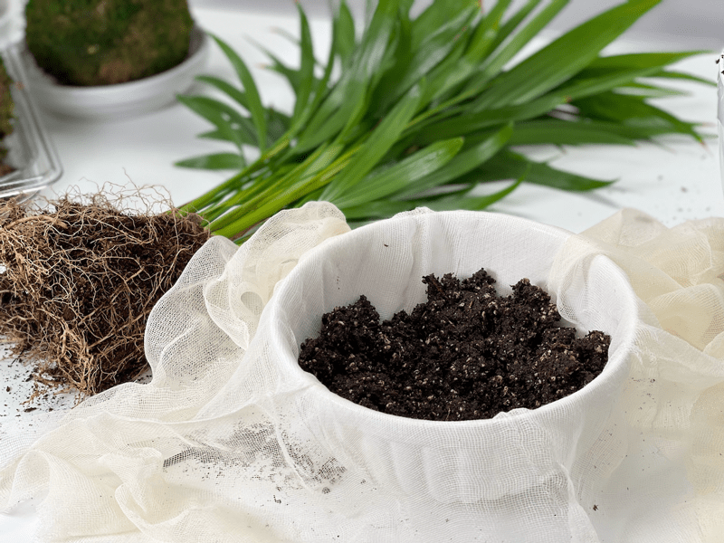
-
Add a layer of the soil mixture into the base of the bowl.
-
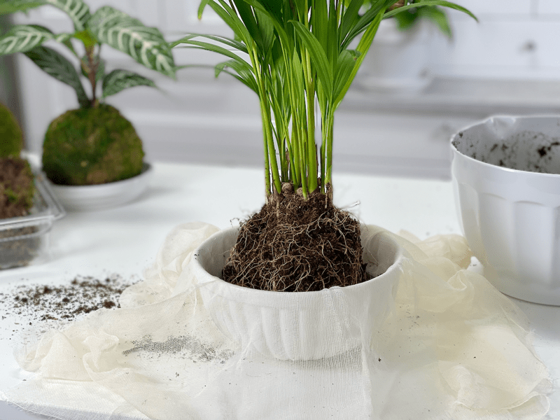
-
Add the plant in the center of the bowl.
-
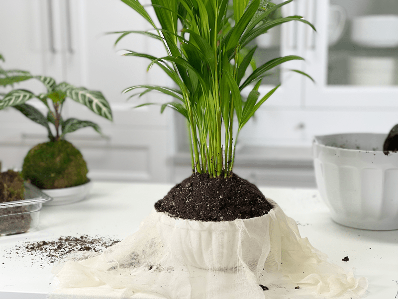
-
Add and pack the soil in around the edges of the bowl and then create a packed mound of soil around the plant.
-
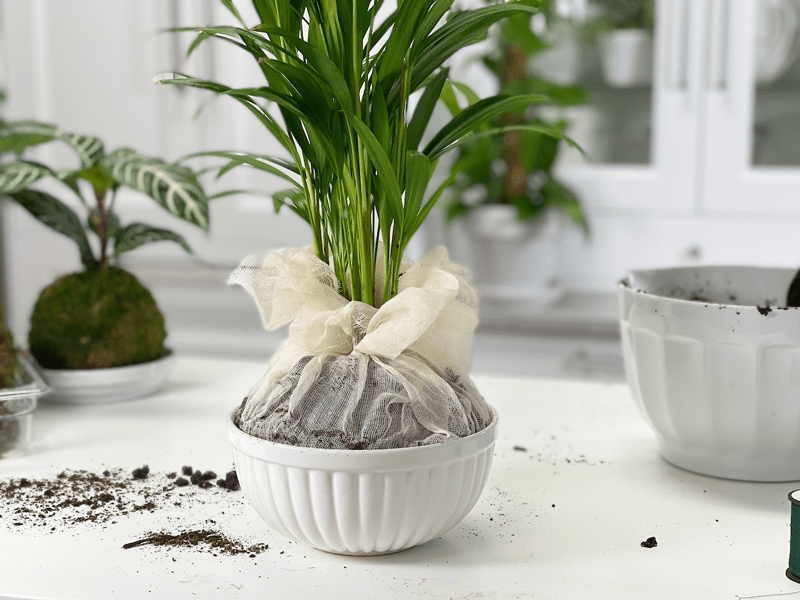
-
Gather up all of the cheesecloth around the base of the plant stems and secure it with a piece of string. Don’t tie it too tight, just enough to hold it into place.
-
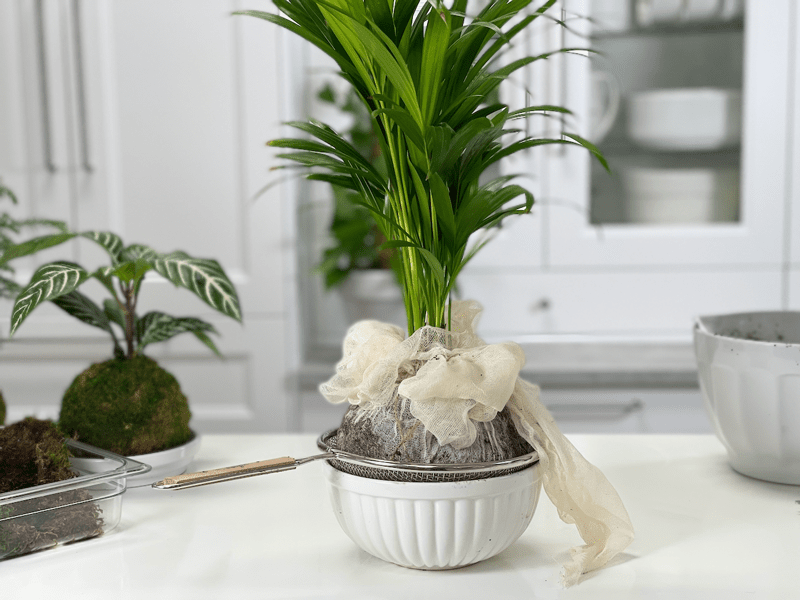
-
Lift the ball out of the bowl and place a strainer inside of the bowl and place the ball back in it. This is optional but it will help to drain any excess water from the ball if the soil was really wet.
-
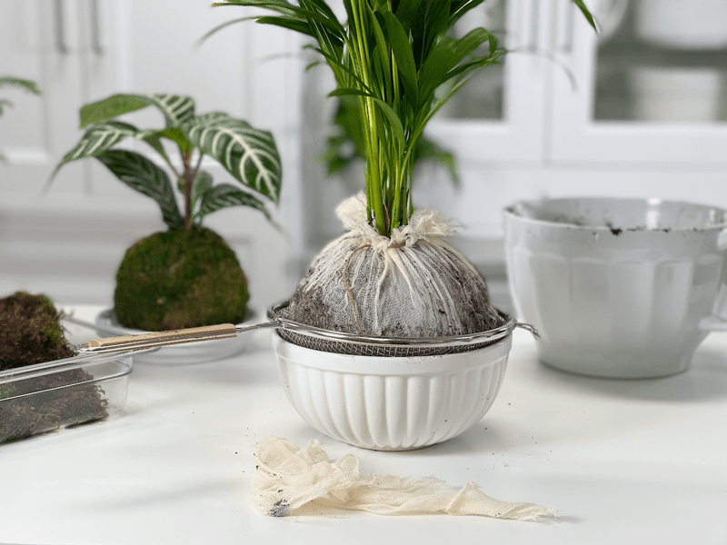
-
Trim away the excess cheesecloth, folding it over the string used to secure it. This will help hide it after you wrap it in cheesecloth.
-
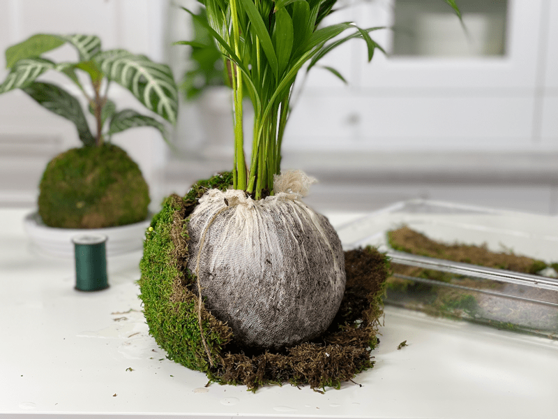
-
Now it’s time to wrap the ball with the sheet moss. You may have to do this in pieces, like I did. With the sheet moss damp, it will help mold it into place.
-
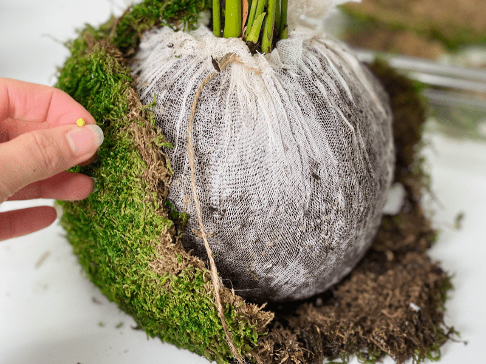
-
This next step is optional but I use sewing stick pins to hold some of the edges or smaller pieces of the moss to the ball. You will remove them once you get some string wrapped around the ball.
-
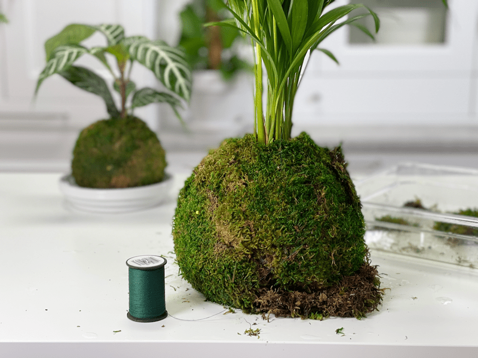
-
I prefer to use sewing thread, in a color that matches the moss, so it disappears. When you first start wrapping the thread around the ball, leave a 10″ tail of thread loose. We will use it to tie off the thread when you are done wrapping the thread around and around the moss ball in all directions.
-
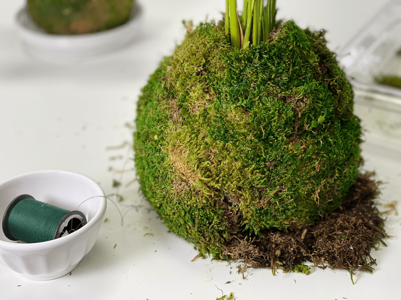
-
I like to place the spool of thread in a small bowl so it doesn’t roll all over the table. Add more moss where needed if you have gaps and then wrap with more string.
-
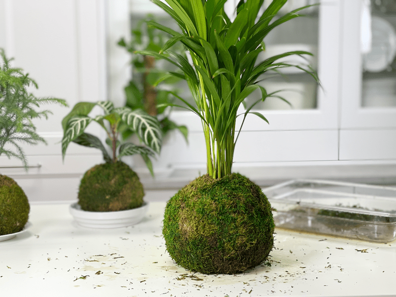
-
While you are wrapping the thread around and around the ball in every possible way, compress the ball and shape it as you go. This will take some patience. Once the sheet moss is fully secured to the soil ball, break off the thread leaving enough of a tail to tie off with the first tail of string you created when first starting out. I am sorry that I couldn’t capture me wrapping the string around the ball. I needed both hands to do that and couldn’t snap a photo.
-
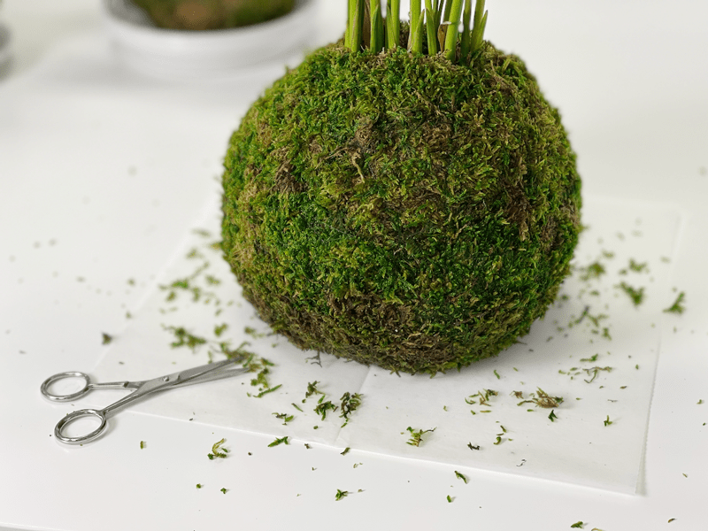
-
Optional – once you are done with the ball, I like to trim off any fringes from the moss to create a clean look.
Taking Care of your Kokedoma Ball
Watering the Kokedoma Ball
- To water your new Kokedama ball, simply soak the entire ball in a bowl or pitcher of water for 10 to 20 minutes once a week. When you take the ball out of the water, gently squeeze it to remove any excess water until it stops dripping. Between waterings, you can also mist the moss to keep it fresh and green.
- The best way to determine if your plant needs water is to feel how heavy it is. If the moss ball feels very light or if the foliage starts wilting then you know it is in need of watering. Remove the soaked Kokedama and drain in a colander for a bit before returning it to its home.
-
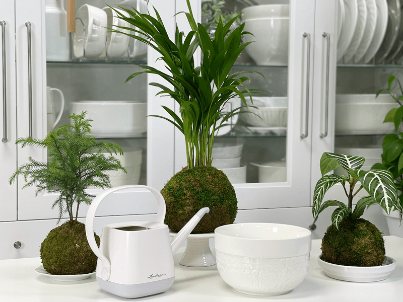
-
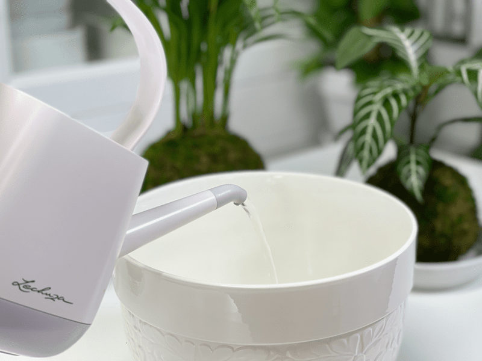
-
Add 2-4″ of water to a bowl that is suitable to hold the Kokedama moss ball.
-
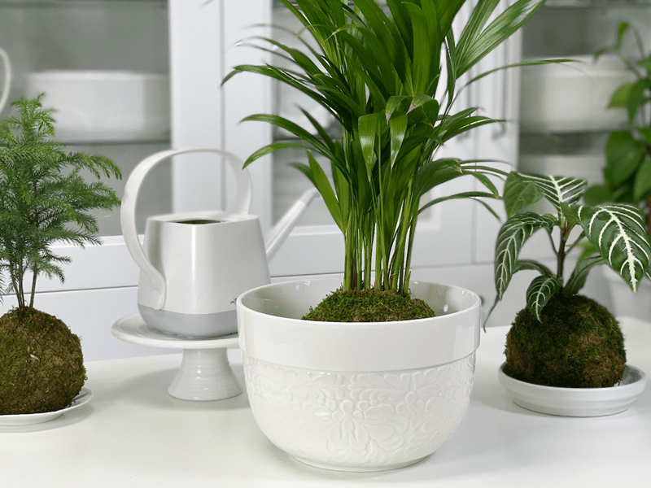
-
Soak for 10-20 minutes.
-
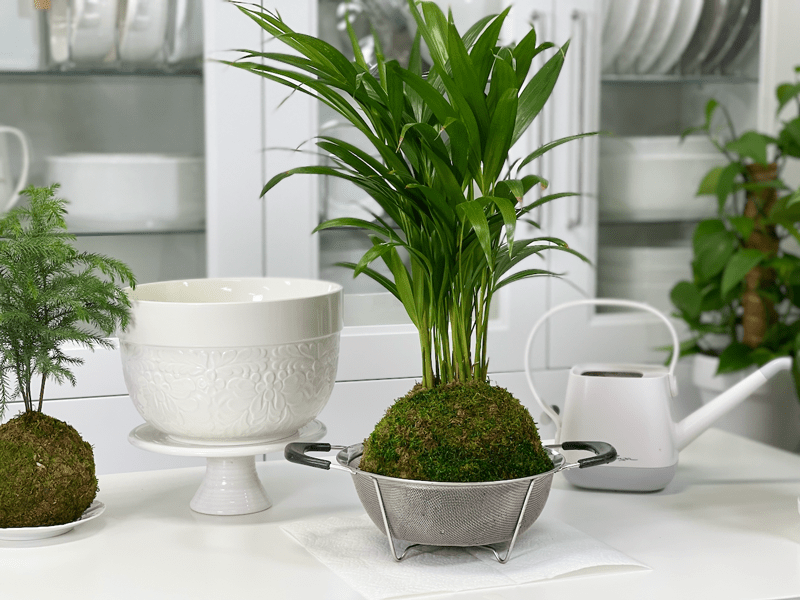
-
Once it is done absorbing water, remove and place in a colander so any excess water can drip from the moss ball. Then return to its rightful home.
Fertizilizing the Kokedama Ball
- Fertilize your moss ball as you would normally feed your other houseplants. Simply add a water-soluble indoor plant fertilizer to your water-soaking routine as shown above.
Trouble Shooting
Why is my Kokedama moldy?
- Mold can be a sign of overwatering or not enough airflow around the ball. Allow the ball to dry out almost completely before watering.
Why is my Kokedama dying?
- The most common reasons a Kokedama is dying are under- and overwatering, insufficient light sources, inappropriate temperatures, pests, or diseases. Basically, it’s all the same issues that could arise with a typical potted plant. It’s time to put your detective hat on to figure out what is going on.
Why is my living moss turning brown?
- If the moss is constantly saturated it can turn brown, similarly, using unfiltered hard water can also turn your moss brown.
- Start off by backing off on the water a bit and see if that makes a difference. Also, assess whether your tap water has any chemicals in it.
Why does my Kokedama ball float and tilt when I water it in a bowl?
- This is not a negative thing; in fact, the moss ball tends to float and tip when I first place it into the bowl of water when it is really dry. This is completely normal, and once the plant starts taking up water, it will sit correctly in the bowl.
© AmieSue.com